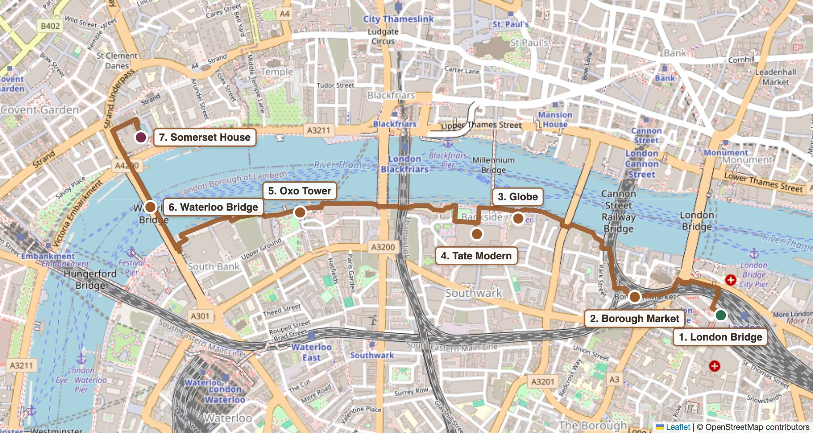
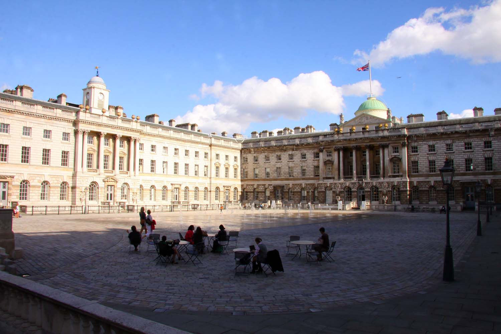
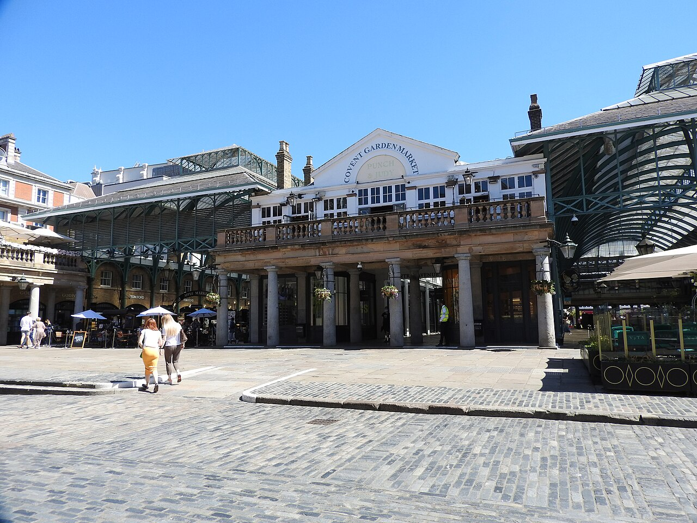
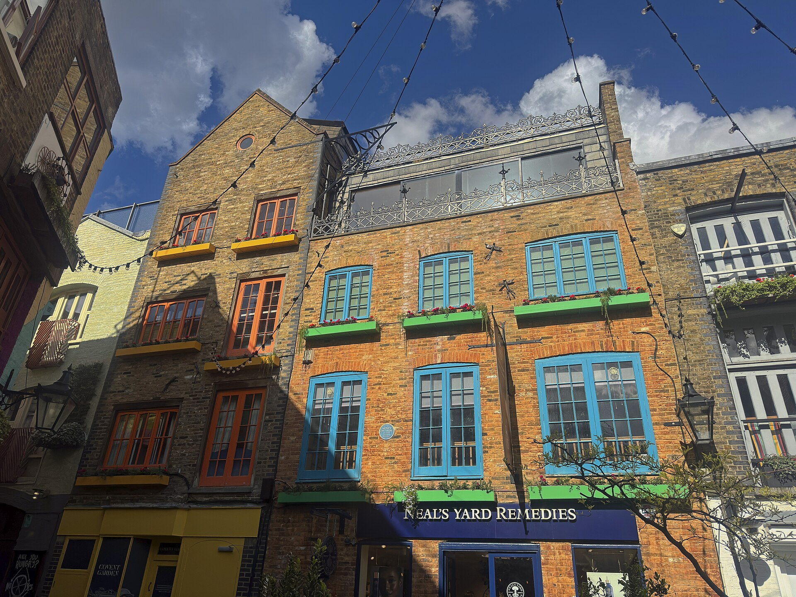
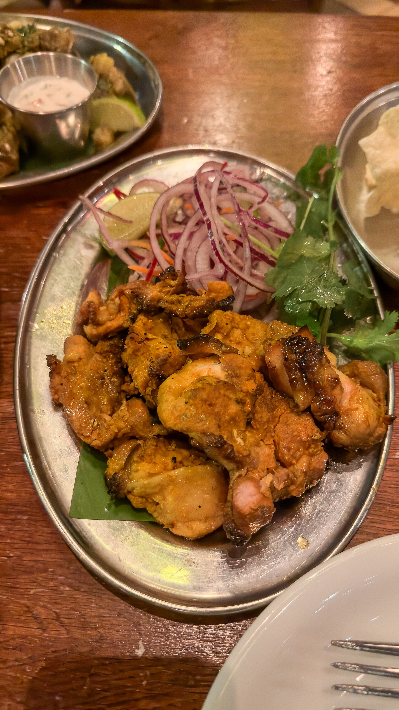
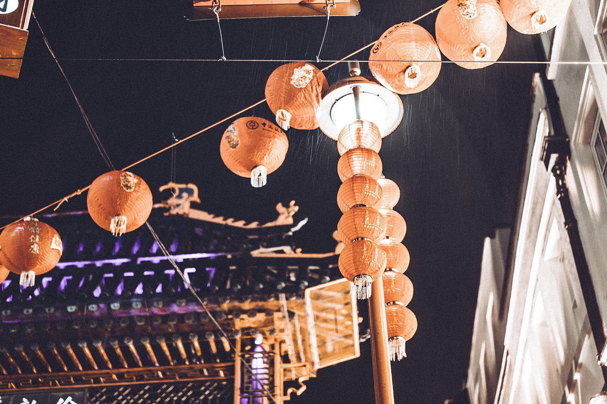
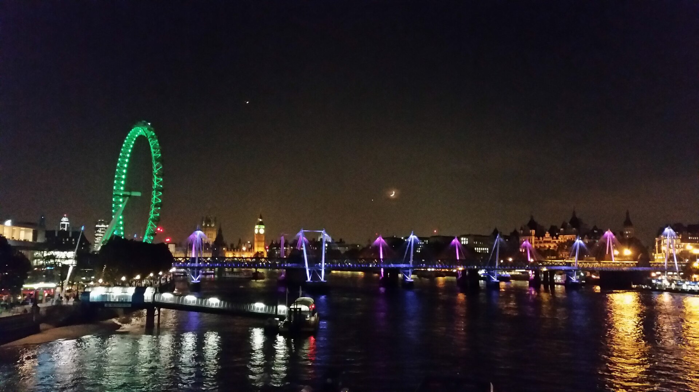

One direct train from Horley to London Bridge. A bite at Borough Market, then the Thames path west past the Globe and Tate Modern, over Waterloo Bridge and into the grand courtyard of Somerset House. Then Covent Garden’s market hall and street performers, and the painted walls of Neal’s Yard. An early dinner is booked at Dishoom, before the queues. Afterwards come Chinatown’s lanterns, Trafalgar Square lit up, and the London Eye glowing from the footbridge, before a direct train gets her to Horley by nine.
Mild for October, and dry. A slim chance of drizzle around 6:00 pm lands while you’re inside Dishoom, then the sky clears for a crisp walk past the lights. The footbridge is breezy, so bring a coat. The blue figures are the chance of rain.
Forecast from Open-Meteo for central London, checked Friday 16 October.
London Bridge, a bite at Borough Market, then the Thames path west and over Waterloo Bridge.
One Thameslink train, no changes, about 40 minutes. London Bridge is the first stop in London. Head out the Borough High Street exit.
| 2:51 pm | Horley, Thameslink to Peterborough. London Bridge 3:30 pm |
| 3:05 pm | Horley, Thameslink to Bedford. London Bridge 3:50 pm |
| 3:21 pm | Horley, Thameslink to Peterborough. London Bridge 4:00 pm |
Three minutes from the station. London’s oldest food market, under Victorian iron and the railway arches, and loud and lively on a Saturday. Keep it to one shared thing, because dinner is early. A Bread Ahead doughnut, or a Monmouth coffee to carry along the river.
London’s best riverside walk, heading west with the water on your right. You pass Southwark Cathedral, the Golden Hinde (a full-size Tudor galleon in a tiny dock) and Shakespeare’s Globe. Then comes Tate Modern’s chimney, with the Millennium Bridge running across to St Paul’s. Step into the Turbine Hall if you want to. A brand-new sound installation opened there this week, and it’s free. Carry on past the Oxo Tower and climb the steps onto Waterloo Bridge.

Right at the north end of Waterloo Bridge. A vast 18th-century palace around a cobbled courtyard where the fountains rise straight out of the ground. Walk through the courtyard and out the front onto the Strand. Covent Garden is five minutes up Wellington Street.

The old flower market, a painted courtyard, and seven little streets meeting at a sundial.
The 1830s market building has an iron-and-glass roof, with the Apple Market’s craft and jewellery stalls under it and a string quartet or opera singer often busking in the sunken lower courtyard. Out on the West Piazza, in front of St Paul’s Church, the street performers draw a crowd. This is the square where Eliza Doolittle sold flowers in My Fair Lady.

Five minutes up Neal Street. Neal’s Yard is a tiny hidden courtyard of brightly painted walls, window boxes and flower pots, the most photographed corner of Covent Garden. Around the corner is Seven Dials, where seven streets meet at a sundial pillar laid out in the 1690s. Browse the small shops on Shorts Gardens and Monmouth Street. Dishoom is a three-minute walk away.

An early Bombay supper with the table already booked, while everyone else queues.
The original Dishoom, a homage to the old Irani cafés of Bombay, with ceiling fans, black-and-white family photos and the smell of the grill. Booking before 6:00 pm is the trick. After six, tables for two are walk-in only, and the Saturday queue runs 30 minutes to an hour.

Lanterns, fountains and the London Eye, then two Tube stops to the train.
Across Charing Cross Road to Gerrard Street, under the red paper lanterns and the carved gates. If there is room after Dishoom, get a bubble tea or a little fish-shaped custard waffle to walk with. Then cut through Leicester Square, all lit up for the cinemas.

Five minutes to Trafalgar Square, with the fountains, the lions and Nelson’s Column floodlit and the National Gallery glowing behind. Then walk down Villiers Street to the Golden Jubilee footbridge beside Charing Cross and climb up. From the middle, the London Eye glows on the right, Big Ben and Parliament sit down the river, and Waterloo Bridge and St Paul’s are behind you.

Embankment station is at the north foot of the footbridge. Take an eastbound District or Circle line train two stops to Blackfriars, about 5 minutes, and follow the signs to the National Rail platforms.
Thameslink, platform 1 on the timetable. Take a train for Gatwick Airport or Horsham, and check the board says it calls at Horley.
| 7:54 pm | Blackfriars, Thameslink to Horsham. Horley 8:43 pm |
| 8:14 pm | Blackfriars, Thameslink to Gatwick Airport. Horley 9:02 pm |
| 8:24 pm | Blackfriars, Thameslink to Horsham. Horley 9:13 pm |
| 8:44 pm | Blackfriars, Thameslink to Gatwick Airport. Horley about 9:32 pm |
If the riverside walk feels long, ride two stops and walk onto Waterloo Bridge. It saves about 30 minutes, so spend the extra time in Covent Garden.
TfL statusThe big contemporary African art fair, inside Somerset House this weekend. It’s ticketed. Add an hour and have her catch the 2:21 pm instead.
Somerset HouseVintage buses and Tube trains you can climb into, right on the Piazza. It is paid, and good if it pours.
MuseumOpened this week, with 50% off food until 20 October. It’s walk-in only with a long queue, so it’s one for another day.
DetailsA free drop-in games lounge and immersive pieces until 9:00 pm, a 10-minute walk across the river.
ProgrammeThe Mayor’s free Diwali festival, with music, dance and food stalls, five minutes from Dishoom. It is the weekend after.
DetailsGathered 13 to 16 October from The Nudge, Solosophie, Time Out, Visit London, Dishoom, Somerset House and the venues’ own sites.
Same time next month?